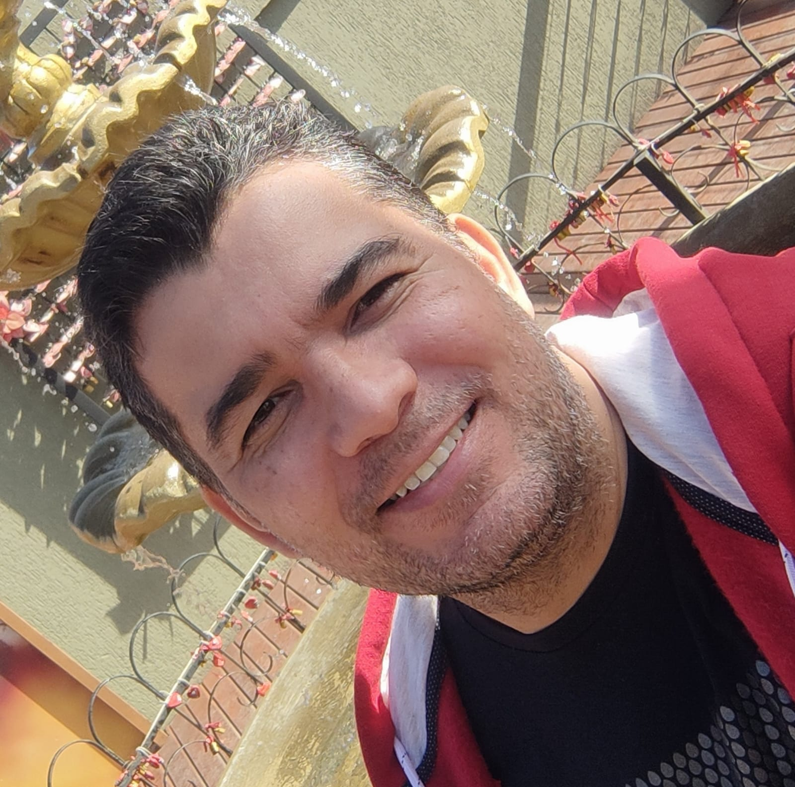

Meu Currículo

Resumo
Sou brasileiro, casado, com experiência de 25 anos na indústria siderúrgica.
Adoro tecnologia e estou cursando Desenvolvimento de Sistemas na Etec de Pindamonhangaba.
Formação
- Tecnólogo em Metalurgia
- Técnico em Desenvolvimento de Sistemas (cursando)
Experiência Profissional
Operador de Pontes Rolantes nas empresas Alcan e Gerdau:
- Pontes com Controle Remoto;
- Pontes com Cabine (vazamento de metal líquido);
- Pontes com Eletroímã (confeccionando cargas e carregando caminhões);
Técnico Químico na Gerdau
- Recebimento e preparação do corpo de prova para análise no espectrômetro;
- Análise de ferro-ligas em em espectrômetros de fluorescência Raio-x, emissão óptica e de C e S por combustão;
- Responsável por elaborar e certificar padrões secundários;
Habilidades
- Liderança com empatia;
- Multiplicador dos conceitos de segurança;
- Ótima comunicação;
- Comprometimento e foco nos resultados;
Cursos e Qualificações
- Pacote Office
- MsProject
- Conhecimento em SAP
- CRQ Ativo
- HTML
- CSS